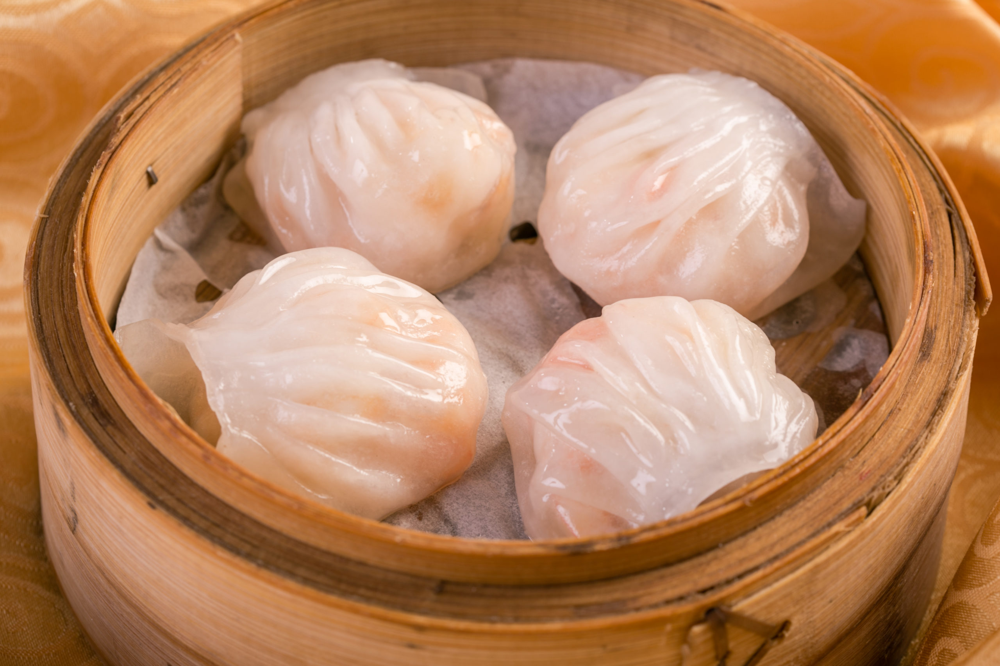

Hakw
Description
Hakaw or "Har Gow", is a type of Chinese cuisine and a traditional Cantonese dumpling served as dim sum.
Ingredients
For the filling:
- Medium Shrimp
- Minced bamboo shoots, water chestnuts or jicama
- Green Onion
- Cornstarch
- Sake or Rice Wine
- Mirin or Sweet Sake
- Toasted Sesame Oil
- Soy Sauce
- Salt
- Fresh Ginger
For the dough:
- Wheat Starch
- Tapioca Flour/Starch or Wheat Starch
- Boiling Hot Chicken Broth
- Salt
- Vegetable Oil
Steps
- Peel and devein the shrimp.: Peel and devein the shrimp. Cut the shrimp into 1/2-inch segments. Mix with the rest of the filling ingredients and set aside.
- Mix all the dry ingredients: In a bowl, mix all the dry ingredients for the dough. With wooden chopsticks, stir in the boiling hot chicken broth and the vegetable oil.
- Sprinkle wheat starch over a wooden cutting board or other appropriate kneading surface: Sprinkle wheat starch over a wooden cutting board or other appropriate kneading surface. When the dough is still hot, start kneading the dough until it becomes smooth. If the dough is sticky, you may need to add more wheat starch.
- Cut the dough into 4 sections: Cut the dough into 4 sections and roll each section into an 8-inch cylinder, using the palms of your hands. For this recipe, cut each cylinder into 8 pieces. Cover with plastic to keep the dough moist while you flatten each piece.
- Fold 8 narrow pleats, where each pleat overlaps the previous pleat halfway. You should leave about 1/3 of the edge without pleats.
- While avoiding the edges of the dough, use a small spoon to place a teaspoon of filling into the center of the wrapper.
- Press the edges of the dough together, forming a half circle. Put it on your working surface, pressing the bottom of the dumpling. Fill the remaining wrappers until you have about 32 dumplings.
- Using a steamer, cook the dumplings over high heat for 7 minutes. Remove the steamer from the heat and let the dumplings settle for 3 minutes before moving them. Serve dumplings hot.
Go back to main page